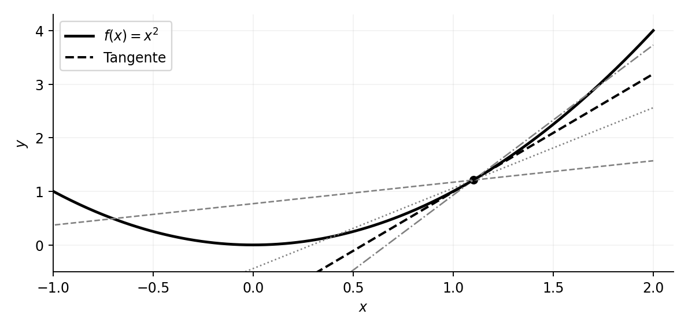
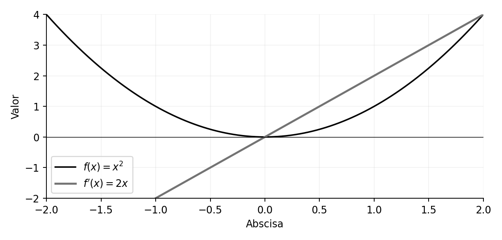
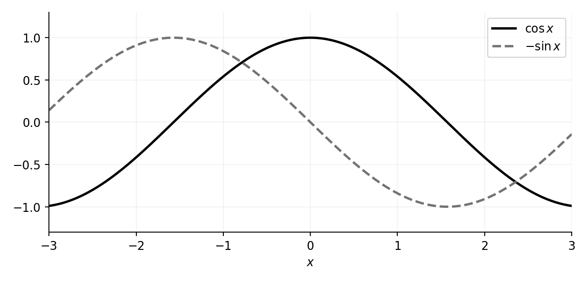
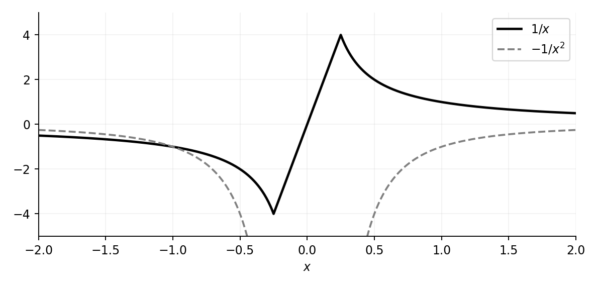
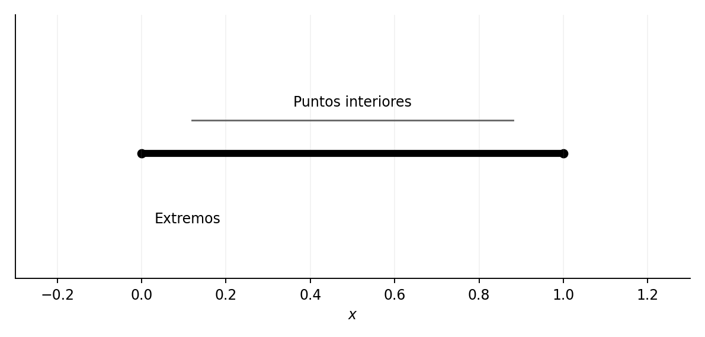
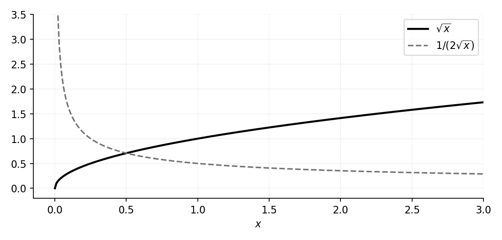

La derivada como límite de pendientes
Capítulo 17 · Parte V. Límites de funciones y cálculo diferencial
La pendiente de una secante varía con los puntos que la determinan. Al tomar un límite aparece la pendiente de la tangente, y con ella la derivada como función que cuantifica la variación local.
Grabaciones de referencia: grabación de la cátedra 14.1.
Procedencia de este tramo: cátedra 14.1.
Del estudio de límites al problema de la tangente
En la clase (13:26–16:34). La semana 14 comienza con la derivada como una herramienta para estudiar la variación de una función real de variable real. La presentación es inicialmente geométrica: dado un punto de una curva, se buscan las pendientes de las rectas que pasan por ese punto y por un segundo punto móvil de la misma curva. El segundo punto se acerca al primero y las pendientes permiten reconocer la dirección local de la curva.
Fijemos una función \(f:A\to\mathbb R\), un punto \(a\in A\) y el punto \(P=(a,f(a))\) del gráfico. Elegimos \(x\in A\) con \(x\ne a\) y formamos \(Q=(x,f(x))\). La pendiente de la recta secante \(PQ\) es
\[ m_a(x)=\frac{f(x)-f(a)}{x-a},\qquad x\ne a. \]
El numerador es la variación de la ordenada y el denominador es la variación de la abscisa. La razón entre ambas expresa cuánto cambia \(f\) por unidad de variación de su argumento.

En la clase (18:42–27:09). Cuando el punto \(Q\) se desplaza sobre la curva hacia \(P\), la pendiente de la secante suele aproximarse a un número. El caso \(x=a\) queda fuera del cociente porque su denominador es cero. Precisamente por eso la herramienta apropiada es el límite cuando \(x\to a\) por puntos del dominio distintos de \(a\). Si ese límite es un real \(m\), se llama pendiente tangente y la recta correspondiente posee la ecuación
\[ y=f(a)+m(x-a). \]
Aquí se localiza el paso decisivo de la intuición al cálculo: las rectas secantes son objetos geométricos bien definidos para \(x\ne a\); el límite de sus pendientes es un objeto numérico definido mediante la teoría anterior.
Ejemplo de la parábola
Demostración desarrollada. Para \(f(x)=x^2\) y un punto fijo \(a\in\mathbb R\),
\[ \frac{f(x)-f(a)}{x-a}= \frac{x^2-a^2}{x-a}= \frac{(x-a)(x+a)}{x-a}=x+a\quad(x\ne a). \]
Por consiguiente,
\[ \lim_{x\to a}\frac{x^2-a^2}{x-a}=2a. \]
La recta tangente a la parábola en \((a,a^2)\) tiene pendiente \(2a\) y ecuación \(y=a^2+2a(x-a)\). En el origen la pendiente es cero; a la derecha es positiva y a la izquierda es negativa.
La derivada como función de la posición
En la clase (27:09–46:40). El profesor explora gráficamente la pendiente tangente de varias curvas, observando cómo cambia al desplazar el punto de contacto. Esa operación produce una nueva función: a cada abscisa donde existe pendiente tangente se asigna el valor de esa pendiente. Su gráfico puede trazarse a partir de la curva original.

En la parábola \(x^2\) se reconoce \(2x\): pendiente negativa a la izquierda del origen, nula en cero y positiva a la derecha. El estudio cualitativo de \(\cos x\) conduce a una función de pendientes \(-\sin x\). Asimismo, para \(f(x)=1/x\) con \(x\ne0\), la pendiente es negativa en ambos lados: su derivada es \(-1/x^2\).


Ampliación editorial. La gráfica de \(f'\) proporciona información sobre el crecimiento local de \(f\). Cuando \(f'(a)>0\), la aproximación lineal \(f(a+h)\approx f(a)+f'(a)h\) predice incrementos de \(f\) para \(h>0\) suficientemente pequeño. Cuando \(f'(a)<0\), predice descensos. Esta interpretación será formalizada posteriormente con los teoremas que relacionan el signo de la derivada y la monotonía.
El interior del dominio
En la clase (46:40–1:14:42). Antes de definir la derivada en un punto, San Martín introduce una noción topológica que expresa la existencia de una vecindad completa incluida en el dominio.
Definición afirmativa. Sea \(A\subseteq\mathbb R\). Un real \(a\) es punto interior de \(A\) cuando existe un \(\delta>0\) tal que
\[ (a-\delta,a+\delta)\subseteq A. \]
El conjunto de todos los puntos interiores de \(A\) se denota por \(\operatorname{int}(A)\), también \(A^\circ\).
La definición permite aproximarse al punto desde ambos lados sin abandonar el dominio, una propiedad adecuada para estudiar la pendiente tangente bilateral.

Casos examinados
Para \(A=\mathbb R\), todo real es interior. Para \(A=[0,1]\), el interior es \((0,1)\): cualquier \(a\) estrictamente comprendido entre cero y uno admite, por ejemplo, \(\delta=\tfrac12\min\{a,1-a\}\); en los extremos, cada entorno abierto completo alcanza puntos exteriores al dominio. También \(\operatorname{int}((0,1))=(0,1)\). Para un conjunto finito, y en particular para \(A=\{0\}\), el interior es vacío; en \(\mathbb R\) el interior de \(\mathbb N\) también es vacío.
Demostración desarrollada. Si \(0<a<1\), tomemos \(\delta=\min\{a,1-a\}/2>0\). Entonces \(a-\delta>0\) y \(a+\delta<1\), luego \((a-\delta,a+\delta)\subset (0,1)\). En cambio, para \(a=0\) todo \(\delta>0\) contiene \(-\delta/2\), que está fuera de \([0,1]\); para \(a=1\) contiene \(1+\delta/2\). Por eso ambos extremos son puntos de acumulación del intervalo, pero no puntos interiores.
Nota editorial. La teoría moderna admite también derivadas laterales en extremos cuando el dominio lo permite. La clase adopta una definición inicial bilateral para puntos interiores, que preservamos como convención local del curso. La ausencia de interior en un dominio discreto impide aplicar esa definición bilateral; no invalida otras nociones de diferencia discreta.
Definición formal de derivada
En la clase (1:20:15–1:22:10). Sea \(f:A\to\mathbb R\) y \(a\in\operatorname{int}(A)\). Se dice que \(f\) es derivable en \(a\) cuando existe un número real \(L\) tal que
\[ \boxed{f'(a)=\lim_{x\to a}\frac{f(x)-f(a)}{x-a}=L.} \]
La notación \(f'(a)\) designa el número pendiente en el punto. Si la función es derivable en diversos puntos, \(f'\) designa la función que asocia a cada uno su derivada. En esta definición el límite es bilateral y finito. Una pendiente que crece sin cota al acercarse al punto no constituye derivada real finita en el sentido utilizado.
Es útil efectuar el cambio \(h=x-a\). Puesto que \(x=a+h\), se obtiene la forma equivalente
\[ f'(a)=\lim_{h\to0}\frac{f(a+h)-f(a)}{h}. \]
Ampliación editorial. La fórmula permite deducir una aproximación local: si \(f'(a)=m\), entonces existe un residuo \(r(h)\) con \(r(h)/h\to0\) tal que \(f(a+h)=f(a)+mh+r(h)\). La tangente constituye así la parte lineal de primer orden de la variación de la función.
Funciones elementales ya calculadas mediante límites
En la clase (1:22:10–1:26:10). San Martín recupera los cocientes de incrementos desarrollados en la unidad anterior, y muestra que ahora representan derivadas.
Exponencial
En las cátedras de límites se obtuvo
\[ \lim_{u\to0}\frac{e^u-1}{u}=1. \]
Con \(u=x-a\) se tiene
\[ \frac{e^x-e^a}{x-a}=e^a\frac{e^{x-a}-1}{x-a}\longrightarrow e^a. \]
Por tanto, \(\boxed{(e^x)'=e^x}\) en todo \(\mathbb R\).
Seno y coseno
Utilizando \(\lim_{h\to0}\sin h/h=1\) y \(\lim_{h\to0}(\cos h-1)/h=0\), junto a las identidades de suma,
\[ \frac{\sin(a+h)-\sin a}{h} =\cos a\frac{\sin h}{h}+\sin a\frac{\cos h-1}{h} \longrightarrow\cos a. \]
De manera análoga,
\[ \frac{\cos(a+h)-\cos a}{h} =\cos a\frac{\cos h-1}{h}-\sin a\frac{\sin h}{h} \longrightarrow-\sin a. \]
En consecuencia, \((\sin x)'=\cos x\) y \((\cos x)'=-\sin x\), con el ángulo medido en radianes.
Potencias de exponente natural
En la clase (1:26:10–1:34:10). Se analiza \(f(x)=x^n\) para un entero positivo \(n\). La prueba utiliza la identidad
\[ x^n-a^n=(x-a)\bigl(x^{n-1}+x^{n-2}a+\cdots+xa^{n-2}+a^{n-1}\bigr). \]
Demostración desarrollada. Para \(x\ne a\) podemos cancelar el factor \(x-a\) y pasar al límite:
\[ \begin{aligned} \lim_{x\to a}\frac{x^n-a^n}{x-a} &=\lim_{x\to a}\sum_{k=0}^{n-1}x^{n-1-k}a^k\\ &=\sum_{k=0}^{n-1}a^{n-1}=n a^{n-1}. \end{aligned} \]
Así, \(\boxed{(x^n)'=n x^{n-1}}\). Para \(n=1\), la identidad da la derivada de la función identidad, \(1\). Para \(n=2\) se recupera \(2x\); para \(n=5\), \(5x^4\). En esta parte el profesor hace explícito que el símbolo \(n\) es un exponente fijo, mientras que \(x\) es la variable que tiende al punto.
La derivada de raíces
En la clase (1:34:10–1:44:51). Para \(n\ge2\) se considera \(f(x)=\sqrt[n]{x}\). El dominio real depende de la paridad de \(n\): para \(n\) par corresponde a \([0,\infty)\) y para \(n\) impar a \(\mathbb R\). La fórmula se estudia en puntos interiores donde el cálculo es legítimo; en especial, el punto cero exige atención.
Cambio de variable
Sea \(a\) un punto del dominio donde \(a\ne0\) y tomemos \(u=\sqrt[n]{x}\), \(b=\sqrt[n]{a}\). Entonces \(x=u^n\), \(a=b^n\) y, por la continuidad de la función raíz en los puntos correspondientes, \(u\to b\) cuando \(x\to a\). Se obtiene
\[ \begin{aligned} \frac{\sqrt[n]{x}-\sqrt[n]{a}}{x-a} &=\frac{u-b}{u^n-b^n}\\ &=\frac{1}{u^{n-1}+u^{n-2}b+\cdots+b^{n-1}}. \end{aligned} \]
Al pasar al límite, el denominador tiende a \(n b^{n-1}\). Por tanto,
\[ \boxed{\left(\sqrt[n]{x}\right)'=\frac{1}{n\,x^{(n-1)/n}}} \]
en los puntos reales \(x\ne0\) de los dominios correspondientes. La expresión también coincide con la regla formal de potencias \(\alpha x^{\alpha-1}\) para \(\alpha=1/n\), pero aquí se ha demostrado mediante límites y factorización.

El caso cero y el alcance de la definición
Para \(n\) par, \(0\) es un extremo del dominio y no es interior de \([0,\infty)\): la derivada bilateral definida en la clase queda fuera de su alcance. Para \(n\) impar y \(n\ge3\), \(0\) sí es interior del dominio, pero
\[ \frac{\sqrt[n]{x}-0}{x-0}=\frac{1}{x^{(n-1)/n}} \longrightarrow+\infty\qquad(x\to0,\ x\ne0), \]
porque \(n-1\) es par y \(x^{(n-1)/n}>0\) para \(x\ne0\). El límite no constituye un número real finito; por ello la raíz impar de grado al menos tres no es derivable en cero conforme a la definición adoptada. Esta distinción entre punto interior y existencia efectiva del límite derivada cierra el razonamiento de la clase.
Registro de fidelidad y referencias
Fuente primaria: Jorge San Martín, «IC2021: Cátedra 14.1. Lunes 12:00», emisión del 5 de julio de 2021; subtítulos automáticos consultados el 1 de noviembre de 2026. La fecha corresponde a la emisión publicada, no a un dato inferido. La parte inicial contiene coordinación docente y pruebas de audio; la exposición matemática sustantiva empieza aproximadamente a 13:26. El cotejo visual completo de las curvas mostradas en pantalla queda pendiente.
Criterio editorial: se mantuvo el orden argumental y se separaron los ejemplos orales de las ampliaciones. Las seis figuras son esquemas matemáticos propios, generados a partir de ecuaciones verificadas. La versión impresa y el archivo Markdown comparten la misma fuente textual.
Taller de problemas y soluciones
Los ejercicios se presentan a continuación según la fuente de origen; las ampliaciones editoriales de cada apuntes permanecen expresamente identificadas.
Práctica editorial con soluciones — cátedra 14.1
Ejercicio 1. Derivada de una constante
Demostrar que \(f(x)=c\) tiene derivada cero en todo real. Solución: para \(x\ne a\), el cociente \((c-c)/(x-a)\) es siempre cero; su límite es cero.
Ejercicio 2. Recta afín
Calcular la derivada de \(f(x)=3x-7\). Solución: \((f(a+h)-f(a))/h=3\) para \(h\ne0\), luego \(f'(a)=3\).
Ejercicio 3. Tangente a una parábola
Hallar la recta tangente a \(y=x^2\) en \(a=-1\). Solución: \(f(-1)=1\), \(f'(-1)=-2\); la recta es \(y-1=-2(x+1)\).
Ejercicio 4. Interior de un dominio
Calcular \(\operatorname{int}([-2,1]\cup\{3\})\). Solución: el interior es \((-2,1)\); el punto aislado 3 no tiene un entorno abierto incluido en el conjunto.
Ejercicio 5. Diferencia de cubos
Calcular \(\lim_{x\to2}(x^3-8)/(x-2)\). Solución: para \(x\ne2\), la expresión es \(x^2+2x+4\) y el límite vale \(12\).
Ejercicio 6. Cociente exponencial
Calcular \(\lim_{h\to0}(e^{3h}-1)/h\). Solución: con \(u=3h\) el límite es \(3\lim_{u\to0}(e^u-1)/u=3\).
Ejercicio 7. Derivada del coseno
Calcular \(\lim_{h\to0}(\cos(a+h)-\cos a)/h\). Solución: aplicar la identidad del coseno de la suma y los límites fundamentales; resulta \(-\sin a\).
Ejercicio 8. Raíz cúbica en cero
Decidir si \(x^{1/3}\) es derivable en cero. Solución: \([h^{1/3}-0]/h=1/h^{2/3}\to+\infty\). No existe derivada finita en cero.
Ejercicio 9. Pendiente en puntos próximos
Comparar las pendientes de \(f(x)=x^2\) en \(a=1/10\) y \(a=-1/10\). Solución: \(f'(1/10)=1/5\) y \(f'(-1/10)=-1/5\). Tienen igual magnitud y signo opuesto.
Ejercicio 10. Cociente de incrementos alternativo
Calcular \(\lim_{h\to0}\bigl((2+h)^4-16\bigr)/h\). Solución: es la derivada de \(x^4\) en \(x=2\), obtenida por factorización; vale \(4(2)^3=32\).
Este capítulo pertenece a la edición temática no oficial del curso IC2021. Índice del libro · Fuentes y concordancia.